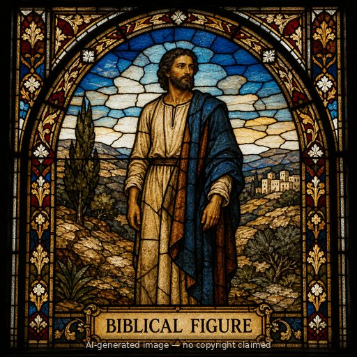

Mattan (M)
First named in 2 Kings 11:18
Mattan served as priest of Baal in Jerusalem during the six-year usurpation of Queen Athaliah, who had seized the throne after murdering the royal family (2 Kings 11:1-3). When the priest Jehoiada engineered the overthrow of Athaliah and crowned the boy-king Joash, the people responded by tearing down the temple built for Baal worship: 'all the people of the land went to the house of Baal and tore it down; they broke his altars and his images in pieces thoroughly, and killed Mattan the priest of Baal before the altars' (2 Kings 11:18; 2 Chronicles 23:17). Mattan's death is recorded without elaboration -- a brief but pointed notice that the same reform which restored Judah's Davidic king also purged the temple of Baal's idolatrous priesthood from the very altars where he had served. His death parallels the earlier judgment on the prophets of Baal under Elijah on Mount Carmel (1 Kings 18:40), part of Scripture's recurring pattern of decisive judgment against organized idolatry when covenant faithfulness to the LORD is restored.
Thought for Today
Judah's true king was restored, the people tore down Baal's temple, striking down its priest Mattan. Jesus's kingdom will sweep away every false god.
References: 2 Kings 11:18; 2 Chronicles 23:17